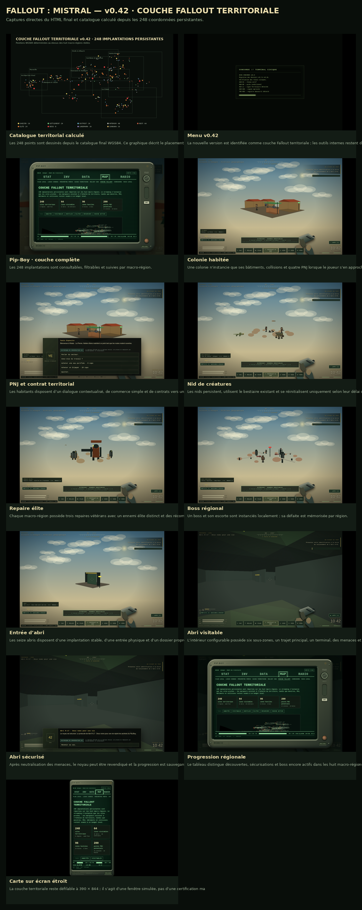

Catalogue territorial calculé
Les 248 points sont dessinés depuis le catalogue final WGS84. Ce graphique décrit le placement, pas une capture satellite.
Captures directes du HTML final. Les caméras et certains états de progression sont préparés pour montrer les fonctions. Le plan général est calculé depuis le catalogue WGS84 déterministe et n’est pas une image satellite.

Les 248 points sont dessinés depuis le catalogue final WGS84. Ce graphique décrit le placement, pas une capture satellite.

La nouvelle version est identifiée comme couche Fallout territoriale ; les outils internes restent dans Admin.

Les 248 implantations sont consultables, filtrables et suivies par macro-région.

Une colonie n’instancie que ses bâtiments, collisions et quatre PNJ lorsque le joueur s’en approche.

Les habitants disposent d’un dialogue contextualisé, de commerce simple et de contrats vers une menace locale.

Les nids persistent, utilisent le bestiaire existant et se réinitialisent uniquement selon leur délai de respawn.

Chaque macro-région possède trois repaires vétérans avec un ennemi élite distinct et des récompenses persistantes.

Un boss et son escorte sont instanciés localement ; sa défaite est mémorisée par région.

Les seize abris disposent d’une implantation stable, d’une entrée physique et d’un dossier propre.

L’intérieur configurable possède six sous-zones, un trajet principal, un terminal, des menaces et un noyau à sécuriser.

Après neutralisation des menaces, le noyau peut être revendiqué et la progression est sauvegardée.

Le tableau distingue découvertes, sécurisations et boss encore actifs dans les huit macro-régions.

La couche territoriale reste défilable à 390 × 844 ; il s’agit d’une fenêtre simulée, pas d’une certification matérielle.